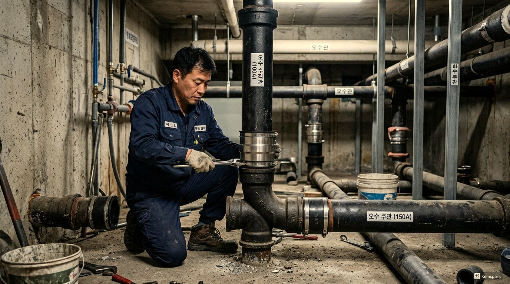

구로구 변기막힘 원인과 해결
구로구의 변기막힘는 건물의 나이와 구조에 따라 발생 패턴이 다릅니다. 전형적인 구로공단 지역. 공장 배수 및 오래된 주택가 배관 노후화 심함 구로구의 특성상 이러한 문제가 자주 발생하며, 빠른 대응이 필요합니다.

▲ 구로구 현장에서 전문 장비로 변기막힘 해결 작업 중
제우스시설관리는 변기막힘 문제를 해결하기 위해 최첨단 전문 장비를 갖추고 있습니다. 드레인 기계로 막힘을 물리적으로 제거하고, 관로 내시경 카메라로 정확한 원인을 파악하며, 고압세척기로 배관 내부를 완벽하게 청소합니다. 구로구 전역에 서비스 인력을 배치하여 28분 내 출동 가능합니다.

▲ 전문 장비를 이용한 변기막힘 해결 작업
구로구 변기막힘 해결 방법
구로구에서 변기막힘가 발생하는 주요 원인 중 하나는 '화장지를 과다하게 사용한 경우'입니다. 이는 구로구의 지리적 특성과 도시 구조로 인한 자연스러운 결과입니다. 문제를 방치하면 더 큰 배관 손상으로 이어질 수 있으므로, 초기 증상이 보일 때 즉시 전문가 상담을 받는 것이 중요합니다.
제우스시설관리 전문 장비
✅ 드레인 기계 - 스프링 와이어로 배관 내 이물질을 물리적으로 파쇄·제거
✅ 관로 내시경 카메라 - 배관 내부를 실시간 영상으로 확인하여 정확한 진단
✅ 고압세척기 - 최대 200bar 고압수로 배관 내벽 오염물 완벽 세척
✅ 관로탐지기 - 매설 배관의 위치와 깊이를 정확히 탐지

▲ 제우스시설관리의 최첨단 장비로 신속하고 정확하게 처리
구로구 서비스 지역
구로구 전 지역에 28분 내 출동합니다. 야간·주말·공휴일 추가 요금 없이 동일한 서비스를 제공합니다.
구로구에서 변기막힘 문제를 경험하고 계신가요? 제우스시설관리는 24시간 긴급 대응, 출장비 무료, 문제 미해결시 비용 0원의 정책으로 구로구 주민들의 신뢰를 얻고 있습니다. 전문 기술자들이 정확한 원인 파악 후 맞춤형 해결책을 제시합니다.
구로구 변기막힘 전문가 조언
변기막힘의 주요 원인은 과도한 화장지 사용, 물티슈나 생리대 같은 비분해성 이물질 투입, 그리고 배관 노후입니다. 특히 물티슈는 '수세식 가능'이라는 표시가 있더라도 실제로는 분해되지 않아 막힘의 주범입니다.
양변기의 트랩 구조는 S자 또는 P자 형태로, 이 곡선 부분에서 이물질이 걸려 막힙니다. 전문 장비 없이 무리하게 뚫으려 하면 도기(변기 본체)가 파손되거나 배관이 손상될 수 있으므로 전문가 도움을 받는 것이 안전합니다.
구로구 변기막힘 작업 프로세스
Step 1. 긴급 접수
변기 상태(역류, 수위 상승, 이물질 유형 등)를 파악하여 적합한 장비를 준비합니다.
Step 2. 28분 내 출동
전문 기술자가 변기 전용 장비와 보호 장구를 갖추고 신속하게 방문합니다.
Step 3. 원인 진단
내시경 카메라로 변기 트랩 내부와 배관을 확인하여 막힘 원인(이물질, 배관 문제 등)을 정확히 파악합니다.
Step 4. 이물질 제거/관통
원인에 따라 특수 집게, 드레인 기계, 또는 고압세척기를 사용하여 문제를 해결합니다.
Step 5. 정상 작동 확인
물을 여러 번 내려 정상 배수 및 수위를 확인합니다.
Step 6. 위생 처리
작업 후 변기 주변 위생 처리 및 소독을 실시합니다.
구로구 변기막힘 실제 현장 사례
📋 아이 장난감이 변기에 빠짐
건물 유형: 5년 된 아파트 | 지역: 구로구
어린이가 작은 장난감을 변기에 빠뜨려 배수 불량. 내시경으로 위치 확인 후 특수 집게로 이물질 제거. 변기 탈거 없이 처리, 작업 시간 20분.
📋 변기 물 내리면 2층에서 역류
건물 유형: 3층 건물 1층 | 지역: 구로구
1층 변기 사용 시 간헐적으로 2층 변기에서 기포 발생. 공용 배관 접합부 불량으로 압력 전달. 배관 접합부 재시공 및 통기관 점검. 작업 시간 2시간.
구로구 변기막힘 예상 비용 안내
예상 비용: 5만원~12만원 (부가세 별도)
비용 결정 요소: 이물질 종류, 막힘 위치
💡 제우스시설관리 특별 정책
✅ 출장비 무료 - 현장 방문 후 견적만 받고 취소해도 비용 없음
✅ 미해결시 비용 0원 - 문제가 해결되지 않으면 한 푼도 받지 않음
✅ 사전 견적 안내 - 작업 시작 전 정확한 비용을 먼저 안내
✅ 추가 비용 없음 - 야간/주말/공휴일 동일 요금
⚠️ 구로구 변기막힘 주의사항
'수세식 가능' 표시가 있는 물티슈도 실제로는 배관에서 분해되지 않습니다. 변기에는 화장지만 사용하고, 기타 위생용품은 반드시 쓰레기통에 버려주세요.
구로구 변기막힘 자주 묻는 질문
Q. 구로구 지역 - 변기 물이 역류하는데 왜 그런가요?
A. 변기 역류는 변기 자체의 막힘 또는 하수 본관의 문제일 수 있습니다. 특히 1층이나 지하에서 자주 발생하며, 정확한 원인 파악을 위해 내시경 카메라 진단이 필요합니다.
Q. 구로구 지역 - 변기에 이물질이 빠졌는데 어떻게 해야 하나요?
A. 손이 닿지 않는 곳으로 이물질이 넘어갔다면 무리하게 밀어넣지 마세요. 전문 장비(관로 내시경)로 위치를 확인한 후 안전하게 제거합니다. 무리한 시도는 배관 파손을 유발할 수 있습니다.
Q. 구로구 지역 - 변기막힘 작업 시 화장실 사용이 불가한가요?
A. 작업 중에는 해당 변기 사용이 제한되지만, 대부분 1시간 이내 해결됩니다. 다른 화장실이 있다면 병행 사용 가능하며, 작업 완료 후 즉시 정상 사용할 수 있습니다.